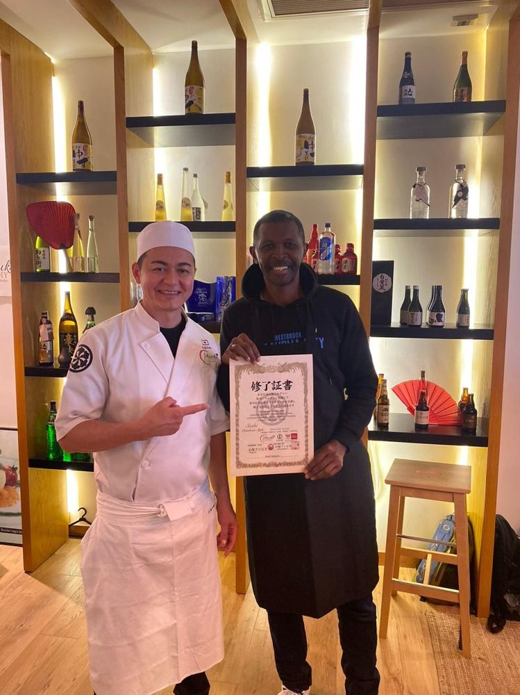
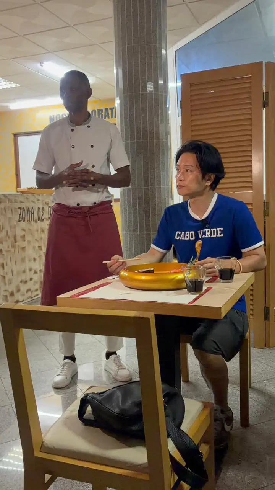

Aprender, praticar, aprofundar
Em maio e novembro de 2024 esteve em Lisboa na Ishizuka Academy: Sushi Omakase Style, Ramen Izakaya e Sushi Sashimi.
Em 2025 viajou até ao Japão para se especializar na cozinha Washoku, com yakisoba, gyoza, cha-han, Sushi Omakase Style, o curso de Ramen níveis I, II, III e IV e Sushi Avançado.
Em agosto de 2026 recebeu no seu restaurante o chefe Miura, do restaurante Asakusa Yadoroku, reconhecido pelo Guia Michelin em Tóquio, e aprendeu a fazer o onigiri, o sushi mais honrado do Japão.
Uma experiência entre Cabo Verde e Japão
Momentos de aprendizagem, partilha e contacto com a verdadeira cultura gastronómica japonesa.

